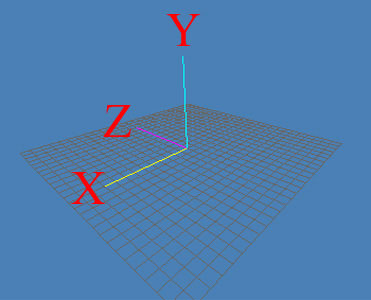
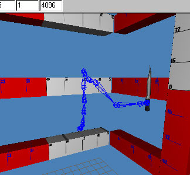
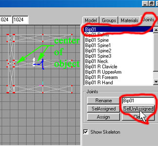
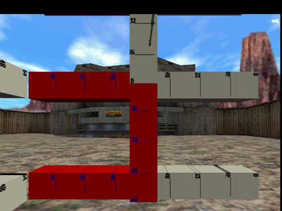
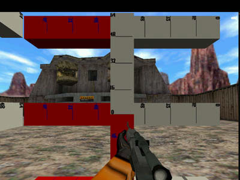

I often get asked the question, "how come I cant see my weapon when I choose it while playing Half Life?" There is a simple reason for this perplexing anomaly; the model is not in the viewers site. It position in relation to you, or what is known as players view, is set to some outside area of the game FOV, (Field Of Vision). This could be below, above, left, right or behind your line of sight. So another question will come up: "how can I move it to a position where I can view it ingame?" Or: "I have been moving this model around and still cant see it, how can I know wTo help you out with this situation, I have made up a Milkshape 3D file to use to help find out where the model is hiding from you. You can download this file at: hl-v_origin.zip
These are valid reasons to pull your hair out by its roots, as you can spend a lot of time using the trial and error method of moving the model around to be able to view it. In a discussion of this nature in the chat room on #wavelength on irc.gamesnet.net, I was trying to explain the method of movement from the statement that you have to add to the models qc file to get it to move to a new origin, when this simple solution came to mind that I am going to explain in this article.
My method is a fairly simple one: create some boxes with lines and numbers on them that reflect units to show you what numbers to put in the $origin statement in the qc file. Lets take a look at this statement and dissect it to see how it affects the models movement:
$origin 5 10 32
The word origin tells the compiler to move the model to a new point in 3D space to the world that you are viewing. You are the center of its universe. (Hey didn't they used to believe that we were in the center of the universe back a few centuries ago?). The origin point 0 0 0 means that you would not move it from its present position. The origin points are measured in the X, Y, and Z coordinate positions in the 3D world of which you are part of as a player. You can see an axis similar to this when your creating a model in 3D Max or Milkshape 3D. (See Figure 1.1)

Figure 1.1 The Axis as viewed in Milkshape 3D
First, you need to put my "origin.ms3d" file in the same directory that you have your "v_" model in as well as the textures that came with it to show the grid. Next, open your model in Milkshape 3D, and most importantly, deselect any thing that may be selected by clicking on Edit->Select None. Next merge the "origin.ms3d" file. (See Figure 1.2 and Figure 1.3).
Figure 1.2 The Merge command

Figure 1.3 Merged files
After Merging the two files, do not deselect the boxes as you will need to move them to a position that matches the center of your model. If you accidentally deselect them you will need to reselect only the boxes with numbering on them. Position the boxes so that they will line up to the center of your weapons center position like you would be viewing it in its idle position. (See Figure 1.4)

Figure 1.4 Centering guides to the v_ model
Now you will want to assign the boxes to a joint that does not move around or rotates in players view. My choice was Bip01 since it does not move or rotate at all. Again refer to Figure 1.4 for how to choose the box vertices as they have not been assigned to any joint yet and all the other vertices should already have an assignment. This is done by clicking on the "Joints" tab and clicking on the "Bip01" in the "Joints" list. After this you will click on the "SelUnAssigned" button, then click on the "Assign" button to assign the vertices to this joint.
A few things are in order for you to do before you might be able to see these boxes ingame. Position the about a body length away from your weapons foremost point. This would be a normal player models length if he was laying horizontally, rather than vertically. You will need to save this as your reference smd file. Recompile your model and save this new model to the directory that you will be able to view it ingame when you choose this weapon. Start HL and choose the game that you need to view this weapon, then select it. You should now be able to see the boxes somewhere in the field of vision, since these puppies are pretty big. If you do not, then the model is way off from the line of site, including the boxes. If this is the case you will need to run extra parameters in your command line start up. To do this you will need to create a destop shortcut like this:
Right click on a blank area of your desktop.
Click on New->Shortcut.
Click the Browse button.
Locate your "Hl.exe" file. (Mine is C:/Sierra/Half Life/valve/hl.exe)
Click before the last " and type a space then type "-dev -toconsole -map doublecross"
This will enable you to start up HL in a the map doublecross for testing. Once you have the game running, pull down the console by typing the "`" key. Type "impulse 101" then "Enter" to get all weapons. (Yes I know, your cheating, but someone's got to do it to fix this weapon!). Select the weapon that is having the problem, and take a look at the guides to see how far off you are. Take a look at Figure 1.5 to see how I viewed a new weapon that I got finished making.

Figure 1.5 Badly aligned weapon at top of viewport.
Now, judging from what I can see in the game, I took a guess from the guides that I needed to bring the weapon down about 32 units. I typed this on the Z axis portion of the $origin statement that I added to my qc. file. Take a look at my qc file in figure 1.6 for an example.

Figure 1.6 Adding the $origin statement to the qc file.
Looking at my qc file shows that putting a "-" in front of the number where the Z axis, or in the case of an UP-DOWN movement on the Z axis would make it move upwardly. So I needed to type just a plain 32 which the compiler will take it to mean +32. Once you figure out what numbers to type in the $origin statement, save the qc file and recompile your model. Run the game from your shortcut and see if your model has adjusted itself correctly like mine did as seen in Figure 1.7 shows.

Figure 1.7 Corrected v_ model.
You may need to make some minor adjustments to your $origin statement so as to get your "v_" model in the right place. Once you have your model in the right view area for your Half Life game, you will open up the merged files and remove the grid boxes by deleting them. Then recompile the model and you have yourself a brand new "v_" model! After using this method I have saved myself a lot of grief and hair pulling! Hopefully now we can get on to making a useful "v_" model without the hassle of trying to find where in the world, or should I say, 3D world, is our model?
This
publication is copywrite © 2001 by Rick J. Kelley and is not to be copied without
the express permission of Rick J. Kelley. Half-Life® is Registered Trademark
by Valve. Use of the pseudo name Rat
is a referral to the author Rick J. Kelley.